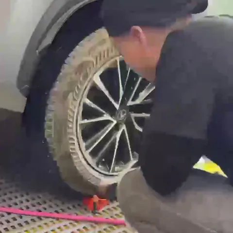
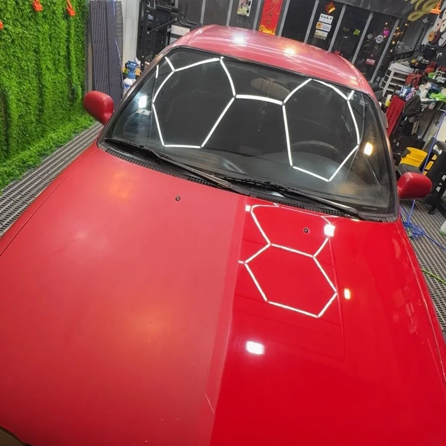
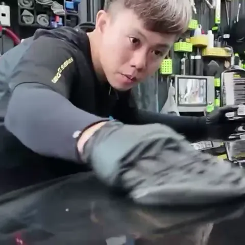
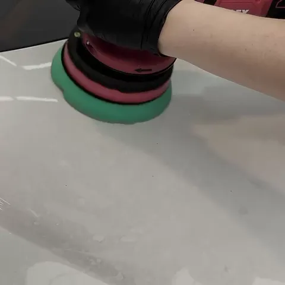
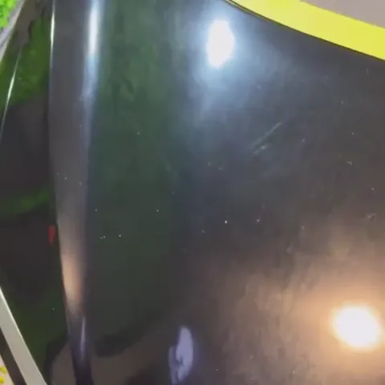
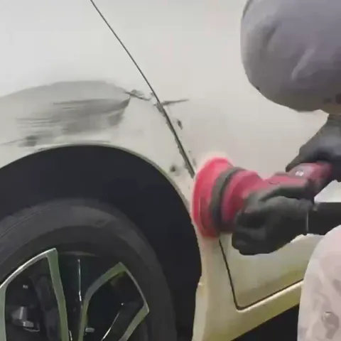
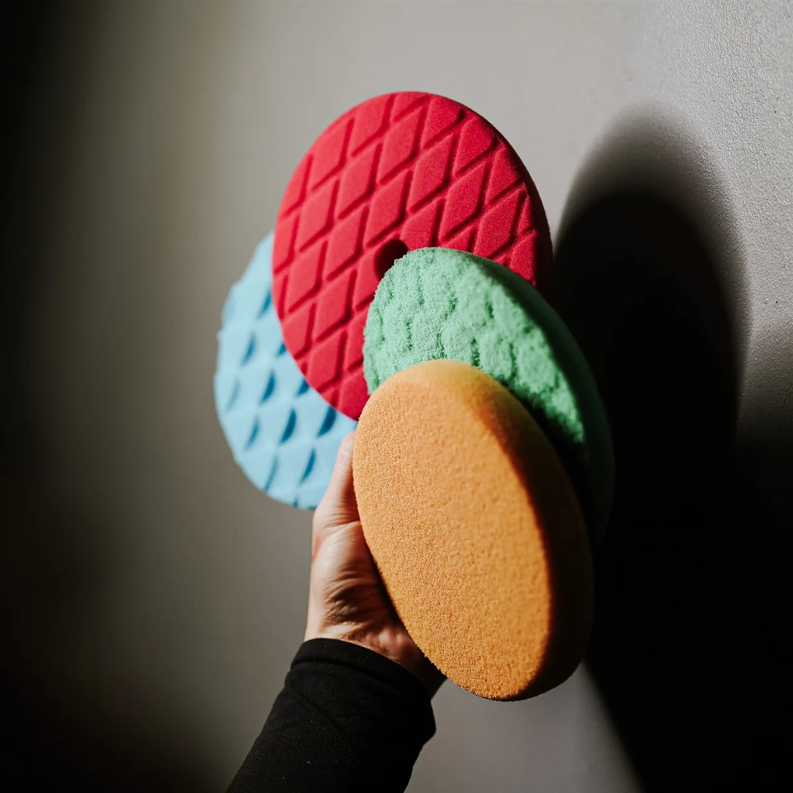

日常維護｜漆面保養
1,800 起車況穩定，想把目前的乾淨維持住。
本級重點
預洗與接觸洗；基礎細節清潔與外觀整理。
還需要知道
不等同完整去汙或刮痕修復；洗後仍有粗糙、水垢或霧化，需再評估。
什麼情況值得進一步處理？
洗後仍粗糙或有附著物，先評估 PR-2；霧化、細紋則需清潔後判斷。
五級《 PRIME 》專業美容方案
第一次不是把流程做滿，而是先把基礎分清楚。
依髒污、漆況與修復需求，安排對車真正有幫助的處理。

洗淨表面，與改善漆面霧化，是不同的工作。先確認問題來自附著汙染，還是漆面本身，再安排需要的處理。
此照片不指定對應某一方案，也不代表每台車的改善幅度。實際工法與可修復範圍，依現場漆況確認。

車況穩定，想把目前的乾淨維持住。
預洗與接觸洗；基礎細節清潔與外觀整理。
不等同完整去汙或刮痕修復；洗後仍有粗糙、水垢或霧化，需再評估。
洗後仍粗糙或有附著物，先評估 PR-2；霧化、細紋則需清潔後判斷。

洗完仍粗糙、附著汙染明顯或撥水不均。
依汙染類型安排專用藥劑與去汙工序，改善漆面潔淨基礎。
去汙不等於拋光；細紋、氧化與已蝕入漆面的水斑未必能靠清潔改善。
去汙後仍有霧化、輕氧化或細紋，可評估 PR-3 以上的修復。

光澤下降、輕微氧化，想改善整體質感。
充分清潔後，評估輕度拋光，改善反射與滑順度。
不承諾清除所有刮痕；深傷及漆層限制須保留，避免不必要的研磨。
依檢查結果確認剩餘缺陷及安全範圍，不自動升級或保證完全無痕。

太陽紋、洗車細紋與反射凌亂較明顯。
依漆況安排更深入的修復組合，著重細節與反射清晰度。
先確認安全修復範圍；局部深傷可能保留，不以消耗漆層換取一時無痕。
依檢查結果確認剩餘缺陷及安全範圍，不自動升級或保證完全無痕。

老化與缺陷較多，或希望規劃完整修復。
依現場評估安排多階段處理，施工時間與範圍另行確認。
最高處理深度也有安全界線；無法修復的缺陷，會在施工前說明。
依檢查結果確認剩餘缺陷及安全範圍，不自動升級或保證完全無痕。

洗車、去汙與拋光，各有目的。清潔能解決的問題，不需直接研磨。
以上為首次美容方案起價；最終價格依車型、車況、施工範圍與相應防護搭配確認。
施工後會向你說明本次已處理與尚需留意的項目；回訪前可透過 LINE 提供車況變化，方便討論後續照護。